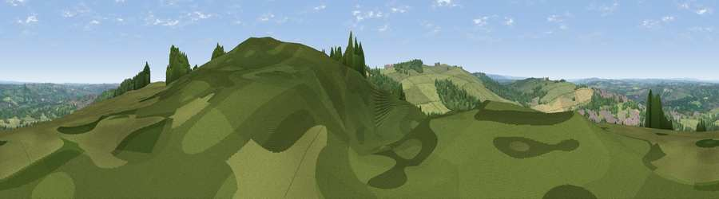

Viewpoint near West Wylam
#10781 in England · top 18% of its area beats it · near West Wylam · access?Where it is
The exact computed spot (NZ 11525 61325). Click the marker for map links.
Public access: no public right of way or access land is recorded at this exact spot — it may be on private land. Computed from Natural England's CRoW access layer and OpenStreetMap rights of way — not the legal definitive map. Always verify locally.
The view, rendered

A 360° render of this exact spot computed from the terrain model, tree cover and land cover — summer colours, afternoon light, calibrated against photographs of famous viewpoints. Real trees, hedges and buildings will differ in detail.
The panorama
Grey silhouette: terrain skyline in each direction (720 bearings, Earth curvature and refraction included). Dashed green: skyline with trees (+15 m) and buildings (+8 m) as obstacles. Blue strip: how far the ground is visible on each bearing.
Where the view opens
Wedge length = distance to the farthest visible ground on that bearing (vegetation-aware). Rings at 10, 25 and 50 km.
What fills the view
53% grassland · 34% woodland · 9% cropland · 4% built-up
Angular shares of the visible panorama (visual magnitude), not map area. Landscape diversity 0.46 (0–1 Shannon).
Key numbers
More beautiful places nearby
The staircase of upgrades: each row has a higher view potential than everything closer. Driving times are estimates from straight-line distance, calibrated against real road routing — check an actual route before setting out.
| Place | Direction | Drive | Score |
|---|---|---|---|
| Viewpoint near Greenside | ESE · 1 km | ~2 min | 74.2 |
| Viewpoint near Burnopfield | ESE · 8 km | ~16 min | 75.4 |
| Pontop Pike | SSE · 9 km | ~18 min | 77.8 |
| Viewpoint near Rothbury | N · 38 km | ~57 min | 81.1 |
| Dove Crag | NNW · 38 km | ~57 min | 82.3 |
| Viewpoint near Glanton | N · 55 km | ~76 min | 82.9 |
| Viewpoint c12273_7856 | NNW · 55 km | ~77 min | 83.7 |
| Viewpoint near Eglingham | N · 60 km | ~83 min | 83.8 |
54.94645, -1.82161 · source: screening · position refined by local search. Computed location — check access rights before visiting.